Ontology Manager (sometimes called the Ontology Management Application, or OMA) enables you to build and maintain your organizationâs Ontology. You can use Ontology Manager for a wide range of activities related to your Ontology, from creating a new object type and defining a new action type, to connecting data to the Ontology, and investigating whether data is updating in user applications.
You can access the application in three different ways, by either:
/workspace/ontology to the end of your Foundry home page URL (for instance, https://example.website.com/workspace/ontology).The Ontology Manager interface is divided into the following elements that you will see referenced throughout the documentation:
The two persisting elements of Ontology Manager are the top bar and the sidebar. The top bar and sidebar serve as navigation elements, providing intuitive access to various features, functionalities, and sections within the application.
The top bar has three main functionalities. It allows users to search for Ontology resources, create new Ontology resources, and navigate between or create new branches.
The sidebar provides easy navigation to different resources, pages, or applications within Ontology Manager.
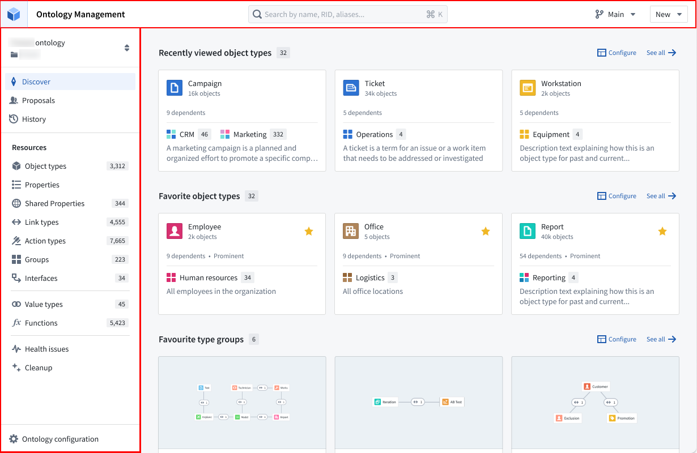
The Discover view offers a highly customizable landing page tailored to your preferences. By default, the Discover view showcases favorite object types, recently-viewed object types, and favorite groups.
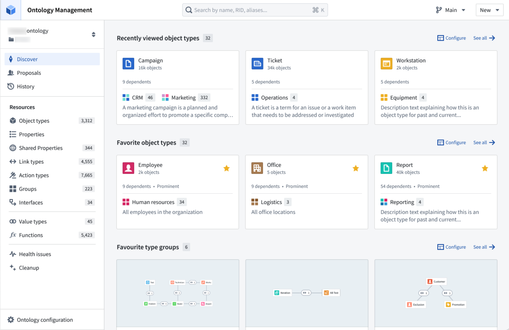
In case the user is new to the Ontology, two specialized sections will be presented: one which displays all object types that were recently modified within that Ontology, and one for all prominent object types.
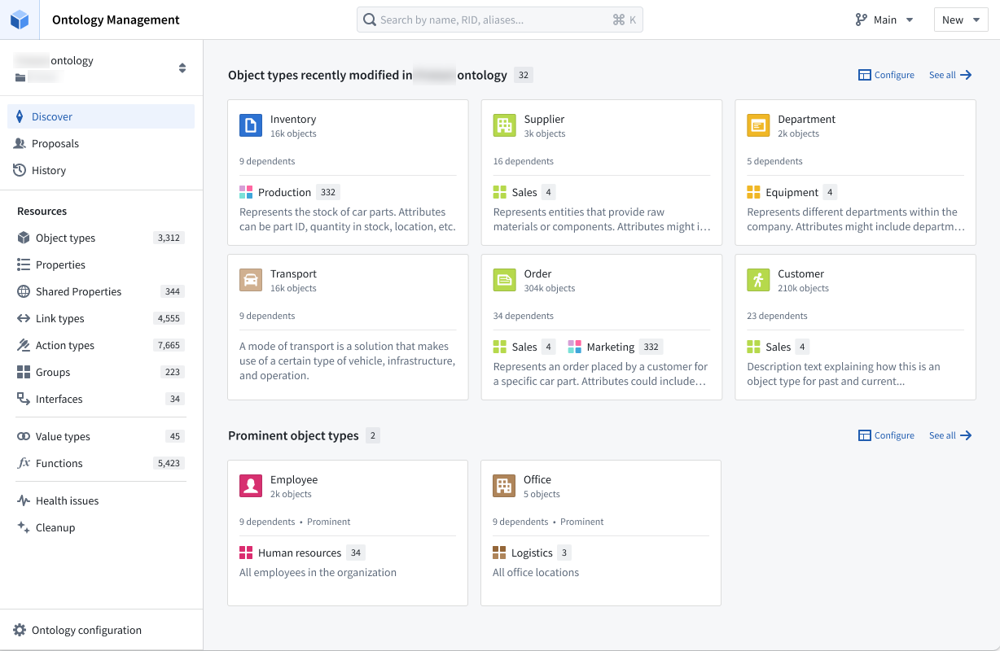
The Discover view provides the flexibility to configure the sections that appear on the page and control the number of items displayed within each section. The available sections include "Recently viewed object types," "Favorite object types," and "Favorite groups." Additionally, you have the option to add a separate section for a specific group, allowing you to explore all object types within that group.
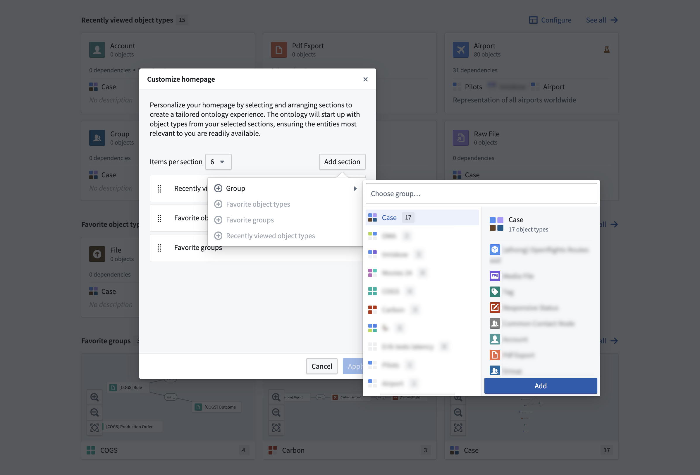
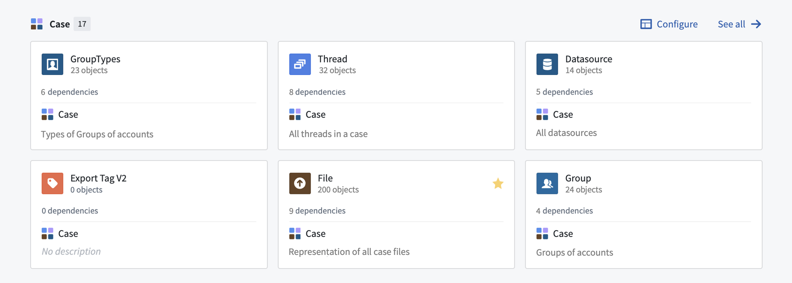
Selecting an object type brings up the object type view, which has the following components:
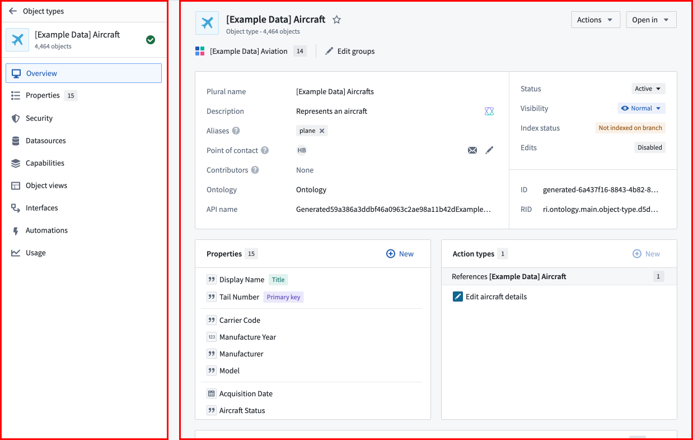
The Overview page of an object type has the following sections, as numbered in the image below:
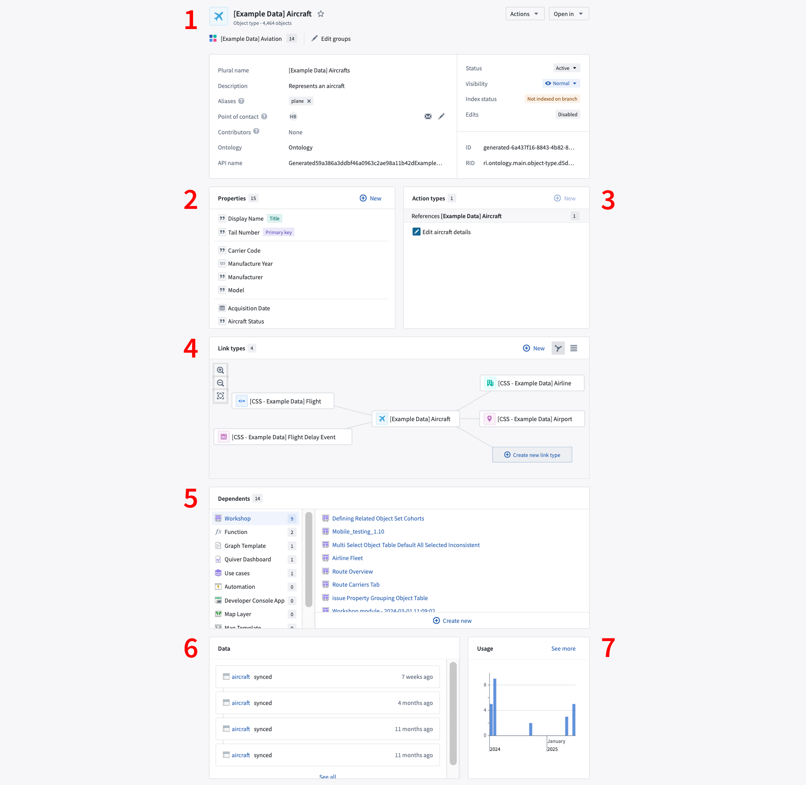
Select a property from the Properties section of an object typeâs Overview page to open the property editor view of the application.
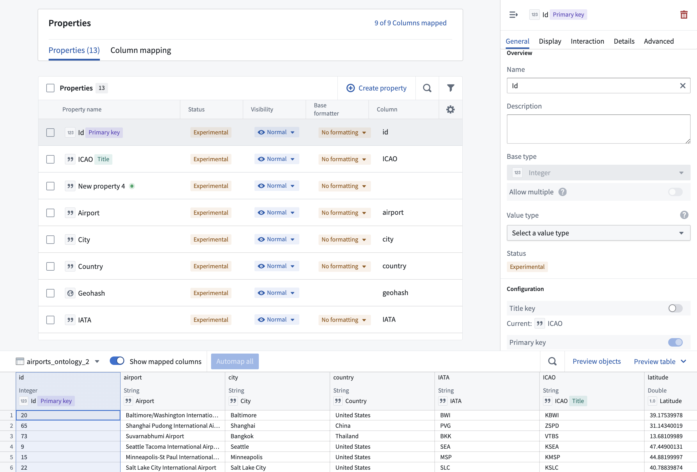
Selecting a link type from the link type graph of an object typeâs Overview tab (see image below) opens the link type view (with Overview and Datasources pages).
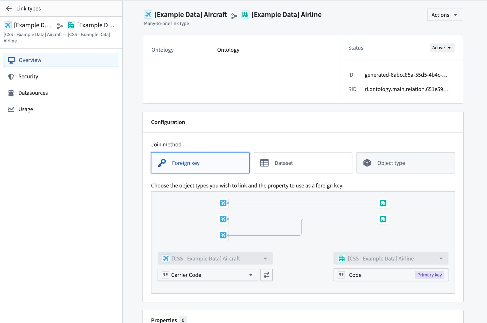
Selecting an action type from the action type section of an object typeâs Overview tab opens the action type view, with further access to the Overview, Logic and Observability pages.
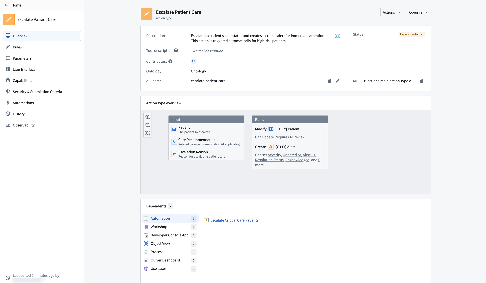
The Observability tab shows the near real-time usage of the action over the last 30 days as well as any monitoring rules and their status defined for the action. Review action rules for detailed action monitoring rule configuration options.
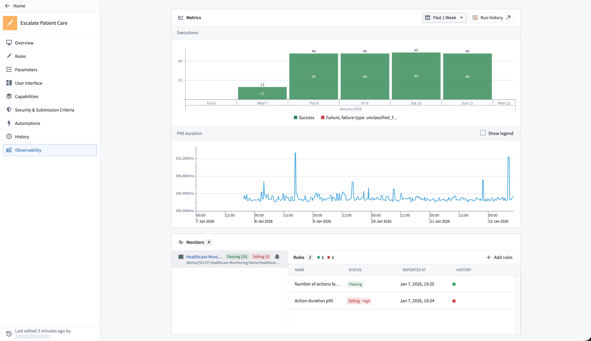
Selecting a function type from the function type section of an object typeâs Overview tab opens the function type view, with further access to the Overview, Configuration and Observability pages.
The Usage History panel records the applications which have used any version of a function, along with the respective version information. From this panel, you can navigate to these applications in order to upgrade the version of a function.
By default, the latest version of the function is displayed. To view other versions, use the version dropdown selector located in the left panel.
Modifications to the function can only be made within the Functions Code Repository. To navigate to the repository, use the Open in Code Repository button found in the top right-hand corner of the entity view.
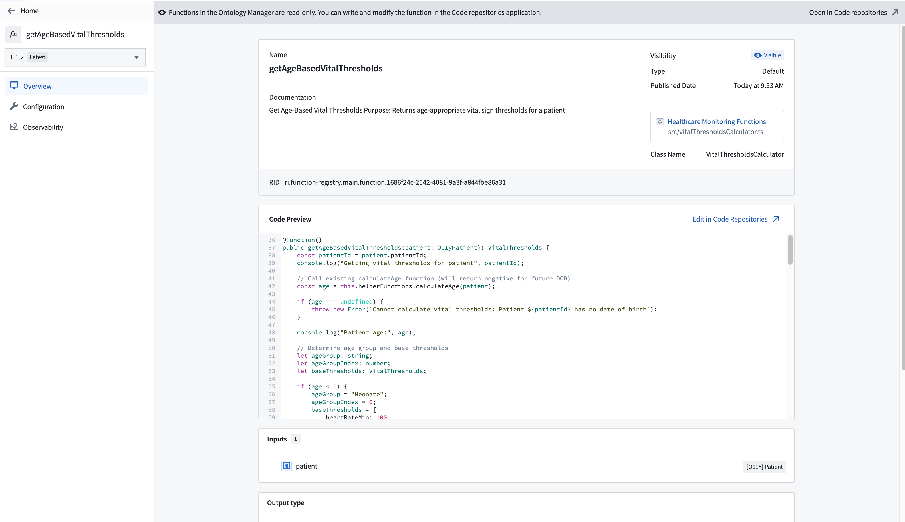
The Observability tab shows the near real-time usage of the function over the last 30 days as well as any monitoring rules and their status defined for the function. Review function rules for detailed function monitoring rule configuration options.
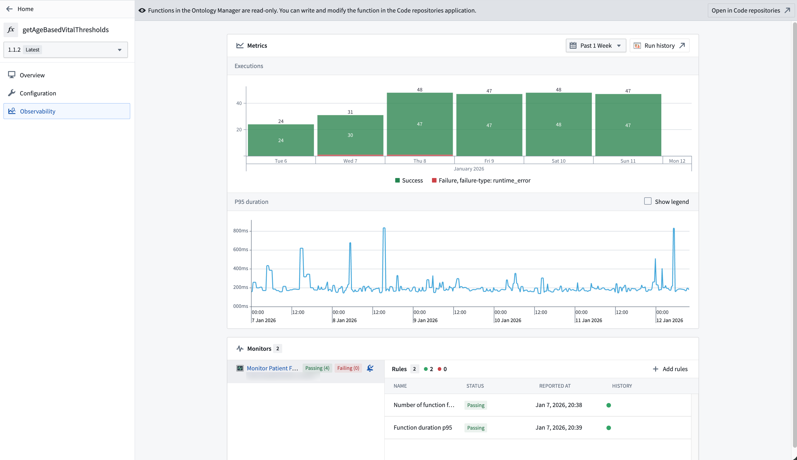